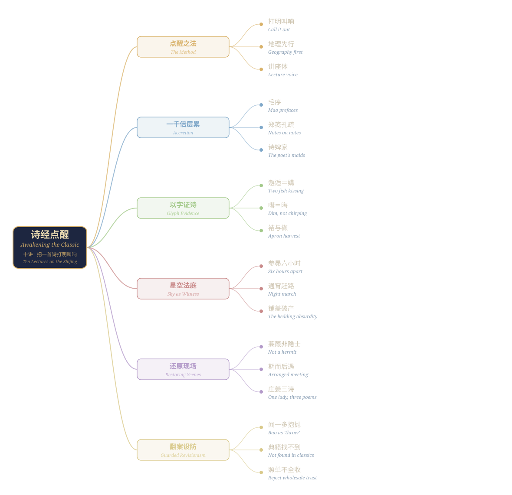

诗经点醒
〇 · 书籍信息
基本信息
| 书名 | 「点醒」是作者自己的定义——「所谓『点醒』，就是一首诗究竟是怎么一回事，把它打明叫响，究竟这首诗说的啥，叫『点醒』」——不是注疏不是赏析，是把诗从千年误读里叫醒 |
|---|---|
| 作者 | 流沙河（1931—2019），原名余勋坦——「一九五七年的『反右』运动中，因《草木篇》被点名，『劳动改造』二十年」；后任《星星》诗刊编辑，「出版有《白鱼解字》《庄子现代版》」——诗人讲诗，先讲文字 |
| 体例 | 十讲视频的文字整理——「从《周南·关雎》到《召南·小星》，一共 13 首诗歌」；老人「不用 PPT，而是用黑板——在开讲之前，他用粉笔把当天要讲的诗工整地」写好——讲座体保留了口语的呼吸：四川话的比喻随处都是 |
| 一句话 | 诗本来是诗，后来有了毛序、郑笺、孔疏——「附到《诗经》上面的文字，其数量是《诗经》原文的一千倍」：读《诗经》的第一课，是学会绕开一千倍。 |
一 · 核心主题总览
这本讲座实录里的四组母题：① 诗经学的层累
流沙河先讲「诗经学」再讲诗：「诗本来是《诗经》，后来有了毛诗……后来又有『毛诗序』……到了汉代又有郑玄的笺注，到唐代又有孔颖达的疏。所以附到《诗经》上面的文字，其数量是《诗经》原文的一千倍」——连郑家丫鬟都「以诗对答」：一个丫鬟问「胡为乎泥中」，另一个答「薄言往愬，逢彼之怒」——「这就是郑玄，他在当时，天下人都承认他是权威」——层累越厚，离诗越远。
② 常识破经学
点醒的第一武器是常识：《芣苡》讲采车前草，「采一株草……应该提个篼篼，丢到篼篼里，她拿衣襟，就往这儿放，一放这儿就满了」——「袺」「襭」两个字证明这不是采药是收获：古人把「和平则妇人乐有子矣」的序硬安上去，「这些人就想到车前草，就把车前草拿去抵起（当答案）」；《小星》讲星象：「参跟昴也是不可能同时出现，中间差六个小时，这就是几乎都是通夜都在赶路」——「抱衾与裯」的贱妾说在常识面前破产：「这些贱妾不但从新都那儿赶起来，还要自带铺盖……简直是头脑之迂腐」
③ 还原现场
点醒的第二武器是还原：《击鼓》与《燕燕》：「写《春秋》是他，编《诗经》是他，这个人叫孔丘。如果没有他，我们也读不到这个诗」——「这个《诗经》当中的《邶风》，这个的前面一首，只隔了一首，叫《燕燕》……是女同性恋，中间只隔了一首……讲男同性恋」——流沙河以此惊讶于孔子的眼光：「他一定有跟很多同时代人不同的眼光」；《野有蔓草》的「邂逅」则考出文字：「邂逅的『逅』……有一种写法是交媾那个『媾』……就是画的两条鱼在接吻。所以『邂逅』就是男女相会，不一定是……不期而遇，就是期而后遇
④ 不能照单全收
全书的立场句：「所以，为什么我们（对传统）不能够照单全收。说现在提倡儒学，连这些都要学，这些都是糟粕」——以《小星》的毛诗序为例：「『毛诗序』这个简直不讲道理，不看原文，看了原文他要扭起说」——点醒的最终目的不是翻案，是把读者从「序—笺—疏」的权威链上解开：诗永远大于注。
二 · 第一讲 关雎与地理学 —— 先懂地方再懂诗—— 周南 · 召南 · 汉水 ——
周南是什么
第一讲不从诗开始，从地图开始：「《周南》，啥子叫『周南』？周南是一个地理概念」——「他们姓『姬』……还在季历那一代，周国作为一个诸侯国，势力向东南方向大大扩张」，沿汉水与西汉水两条江进入湖北北部和四川北部——「流入汉口这条汉水流域周武王交给周公去管……这一片地理区域在古代很多个小国统称为南国，周公管的就叫周南」；西边召公管的叫召南——「所以一定要了解了这个才知道（诗）」。
◆ 语言学习 · 概念 · 二南
| 周南 | 汉水流域：周公的辖区 |
|---|---|
| 召南 | 西汉水（嘉陵江）流域：召公的辖区 |
| 地理先行 | 「了解一首诗，一定要先了解它在什么地方」 |
| 采风 | 按原区域规划编诗：邶风记卫国旧地 |
句型 ｜ 「了解一首诗，一定要先了解它在什么地方。」——全讲的方法论总纲：气候、物产、鸟兽皆随地理而变——诗的背景不是修辞学，是地理学。
毛序的诞生
《芣苡》一讲顺带讲清了「序」的来历：「这首诗的前面还有一个小的序……为了要传授，要解释这个是怎样一回事，前面就要有一个序。这个《诗经》的序是汉代卫宏写的」——「和平则妇人乐有子矣」，一句序让后人「就想到车前草，就把车前草拿去抵起」——而流沙河用「袺」「襭」两个动作字还原真相：这是劳动收获的歌，「如果是摘整个植物的话，应该提个篼篼」——序给了答案，常识推翻了答案。
◆ 语言学习 · 概念 · 抵起
| 毛诗序 | 大小毛公传诗所附导读：卫宏写定 |
|---|---|
| 郑笺孔疏 | 东汉郑玄笺注、唐孔颖达疏：层累的加厚 |
| 抵起 | 四川话「拿来当答案」：序的先入为主 |
| 袺与襭 | 衣襟承物与扎襟于腰：收获动作的工笔 |
习语 ｜ 「附到《诗经》上面的文字，其数量是《诗经》原文的一千倍。」——层累论的狠话：读《诗经》的第一课不是读诗，是分清哪一层是诗、哪一千倍是注释的注释——诗永远大于注。
三 · 第二讲 蒹葭与小星 —— 常识破权威—— 伊人 · 参昴 · 抱衾 ——
蒹葭不是隐士
《蒹葭》被讲成最浪漫的迷雾：「《秦风·蒹葭》从汉代起直到现代都被认为是说隐士，要去找他，找隐士找不到……如果真正就是那么简单，那么这一个隐士究竟有什么好？他能够为我们做什么？也说不出来，那有什么意义可言呢？」——流沙河不满足于「美人不可求」的旧解，把「伊人」还原为具体的思念对象：芦苇深处的那个「所谓伊人」，是可望不可即的恋爱困境——民歌的体温回来了，经学的雾散了。
◆ 语言学习 · 概念 · 伊人
| 隐士说 | 汉以来的旧解：求贤不见 |
|---|---|
| 可望不可即 | 流沙河的还原：恋爱的困境 |
| 秦风 | 甘肃南部、陕南：古老秦国之地 |
| 白露为霜 | 季节的证词：深秋清晨 |
句型 ｜ 「那有什么意义可言呢？」——点醒式的反问：一个解释如果连「这个人是谁、为何要找」都说不清，它就没有解释——凡解释必可追问到现场。
小星的星空法庭
《小星》一讲是全书方法论的展演：「嘒彼小星」的「嘒」字，「毛诗在传这首诗……就特别指明了是卫顷公的时代……一个很正派的官员……写的一首有抗议性质的诗」；流沙河从字形入手：「这个『嘒』是口旁……是写的『蝉声嘒嘒』」，但「齐、鲁、韩三家诗的韩诗那一家，这个『嘒』字就不是这样写的，是另有写法。是日旁」——即「晦」，昏暗；再看星象：「这两个星座确实至少隔六个小时……这就是几乎都是通夜都在赶路」；再看「抱衾与裯」：「这个国君都那么邋遢，带来的铺盖上面有没有跳蚤……简直是头脑之迂腐、可笑」——一字、一星、一床铺盖，三层证据推翻千年旧序。
◆ 语言学习 · 概念 · 三层证据
| 嘒＝晦 | 韩诗写法：日旁，光线昏暗——字形证据 |
|---|---|
| 参昴六小时 | 两星不同现：通宵赶路——天文证据 |
| 自带铺盖 | 贱妾说的不合理：常识证据 |
| 扭起说 | 「看了原文他要扭起说」：经学的执拗 |
习语 ｜ 「简直是头脑之迂腐、可笑，完全不了解实际情况，读书读死了的人就是这样。」——对经学最重的一锤：毛序郑笺的病根不是无知，是脱离生活的推演——书读死了，人就读活了诗读死了。
四 · 第三讲 文字学开路 —— 诗的考古—— 邂逅 · 闻一多 · 背铺盖 ——
「邂逅」的两条鱼
《野有蔓草》讲「邂逅相遇，适我愿兮」：「『邂逅相遇』，不期而遇……根本就不认识，第一次见面，在这儿他们就好起来了」——但流沙河考字：「邂逅的『逅』它是这样写的，还有一种写法是交媾那个『媾』……把女旁去了，这一边就是画的两条鱼在接吻。所以『邂逅』就是男女相会」——结论干脆：「这显然是先有期后有遇，约好了在那里……男子一看，哎呀！这个美女这样漂亮，正是我心中的理想，『适我愿兮』」——一个字的古写，改写了一首诗的性别与温度。
◆ 语言学习 · 概念 · 以字证诗
| 逅＝媾 | 古写互通：两条鱼接吻——男女相会 |
|---|---|
| 适我愿 | 「正是我心中的理想」：男子的口气 |
| 期而后遇 | 对「不期而遇」旧解的翻案 |
| 野有蔓草 | 郑风：约会定在露水野地 |
句型 ｜ 「所以『邂逅』就是男女相会。」——文字学的判决书：一个字的真实古义，比一千年的注疏更有话语权——诗经考古的第一铲，永远挖在字上。
闻一多的「抱＝抛」
《小星》收尾引闻一多：「这首诗中间这个『抱衾与裯』，闻一多先生在解释这首诗时当然不同意『毛诗序』的说法……他把『抱』就解释成『抛』……『抱衾与裯』是我们抛弃了铺盖，所谓抛弃就是我们离开了家，离开了床铺」——闻一多还引唐诗「无端嫁得金龟婿，辜负香衾事早朝」：「是说当官的也很苦，对不起铺盖」——但流沙河保留态度：「这个非常困难，因为在古代典籍中间找不到这个」——他自己的折中甚至带自嘲：「因为 20 世纪 50 年代我们当小编辑、小记者出差的时候，也是背个铺盖卷儿走的」——学问的最后一步是谦逊：证据不足处，让常识与经验补位，但注明这是「想说」不是「证了」。
◆ 语言学习 · 概念 · 抱＝抛
| 闻一多 | 以「抱」为「抛」：离家的铺盖意象 |
|---|---|
| 金龟婿 | 引唐诗作旁证：当官的也对不起铺盖 |
| 保留态度 | 「在古代典籍中间找不到」：证据的边界 |
| 铺盖卷经验 | 50 年代出差记忆：常识补位的自嘲 |
习语 ｜ 「这个非常困难，因为在古代典籍中间找不到这个。」——全书最见学风的一句：翻案者对自己的翻案同样设防线——敢于说「找不到」，才配得上「考出了」。
五 · 人物图鉴与成长弧线—— 主角配角 · 一张表看穿 ——
主要人物
流沙河——主讲人——诗人、文字学研究者：「所谓『点醒』，就是……把它打明叫响」——用地理、字源、常识三件工具替读者卸下一千倍的注疏
孔子——被重新认识的编者——「整理删改《诗经》，他居然把这一首诗保留下来了」——同性恋诗入选令讲者惊叹其眼光
闻一多——同路的翻案者——「抱＝抛」的想象力还原：与流沙河互为呼应又被其审慎检视
郑玄——层累的坐标——「天下人都承认他是权威」：连丫鬟都以诗对答的「诗婢家」——权威与误读同源
次要人物（功能位）
| 毛亨毛苌 | 大小毛公——毛诗序的源头：导读的开创者兼误读的开创者 |
|---|---|
| 庄姜 | 《硕人》《燕燕》的主角——春秋美女的一生：三首诗共享的传奇 |
| 州吁 | 弑君者——「好弄兵，好打仗……搞政变，把太子杀了」：《击鼓》战争的策源 |
| 冉云飞 | 讲座的牵线人——「经冉云飞先生引荐」：十讲缘起的关键人 |
六 · 主题与象征—— 每个道具都在说话 ——
| 粉笔黑板 ↔ 讲诗 | 仪式感——「不用 PPT，而是用黑板」：把当天要讲的诗工整写好——慢，是讲述的一部分 |
|---|---|
| 两条鱼 ↔ 邂逅 | 字源考古——「画的两条鱼在接吻」：一个古字改写一首诗 |
| 铺盖卷 ↔ 常识 | 经验补位——50 年代出差背铺盖的记忆：证据止步处，生活接手 |
| 参昴 ↔ 六小时 | 星空法庭——两星不同现即通宵赶路：天文成了证词 |
| 一千倍 ↔ 层累 | 注疏的重量——「附到《诗经》上面的文字，其数量是《诗经》原文的一千倍」 |
七 · 写作手法赏析—— 怎么写，就能怎么学 ——
① 点醒式命名
不讲「赏析」讲「点醒」——把方法论写进书名：一首诗「究竟是怎么一回事」
② 讲座体保留
口语、四川话比喻全留——「抵起」「篼篼」「搞对象」：学术内容的说书化
③ 三件工具
地理—字源—常识的固定顺序——每首诗同一刀法：可复制的方法比结论更重要
④ 设防线学风
翻案也附「找不到」的声明——「这个非常困难，因为在古代典籍中间找不到」：证据意识贯穿立场
⑤ 文史互证
庄姜故事串三诗——《绿衣》《燕燕》《硕人》共用一个背景：历史给诗装上骨架
八 · 名段欣赏—— 原文精读 · 逐段赏析 ——
九 · 金句摘录—— 14 条 · 中英对照 · 带出处 ——
"所谓「点醒」，就是一首诗究竟是怎么一回事，把它打明叫响，究竟这首诗说的啥，叫「点醒」。"—— 出版前言
"了解一首诗，一定要先了解它在什么地方，因为中国那么大，气候不同，环境不同，种植的东西不同。"—— 第一讲
"附到《诗经》上面的文字，其数量是《诗经》原文的一千倍。"—— 第七讲 · 诗经学
"为什么我们（对传统）不能够照单全收。说现在提倡儒学，连这些都要学，这些都是糟粕。"—— 第七讲
"这个序是汉代卫宏写的……「和平则妇人乐有子矣」。"—— 第二讲 · 芣苡
"如果是摘整个植物的话，应该提个篼篼，丢到篼篼里，她拿衣襟，就往这儿放。"—— 第二讲 · 芣苡
"这个「嘒」是口旁……韩诗那一家，这个「嘒」字就不是这样写的，是另有写法。是日旁。"—— 第八讲 · 小星
"这两个星座确实至少隔六个小时……这就是几乎都是通夜都在赶路。"—— 第八讲 · 小星
"简直是头脑之迂腐、可笑，完全不了解实际情况，读书读死了的人就是这样。"—— 第八讲 · 小星
"邂逅的「逅」……有一种写法是交媾那个「媾」……就是画的两条鱼在接吻。"—— 第六讲 · 野有蔓草
"这显然是先有期后有遇，约好了在那里，某一个野草地里，没有人来。"—— 第六讲 · 野有蔓草
"他把「抱」就解释成「抛」，但是这个非常困难，因为在古代典籍中间找不到这个。"—— 第八讲 · 小星
"写《春秋》是他，编《诗经》是他，这个人叫孔丘。如果没有他，我们也读不到这个诗。"—— 第五讲 · 击鼓
"他一定有跟很多同时代人不同的眼光，不然他不可能把这个保留下来。"—— 第五讲 · 击鼓
十 · 拓展阅读—— 原文 · 词条 · 译文 ——
十一 · 个人感悟与心得—— 三点心得 ——
三点感悟
① 方法比结论值钱
三件工具的通用性：地理—字源—常识的刀法不限于《诗经》——读任何经典，先问「它在哪儿、这个字当年什么意思、生活里说通说不通」。
② 权威也需过常识关
毛序郑笺的破产现场：「自带铺盖的贱妾」经不起一问——凡解释必可追问到现场；通不过常识的解释，再古老也不自动正确。
③ 给自己的结论设防线
「找不到这个」的学风：翻案者最难的一步是对自己的翻案保持怀疑——证据止步处，注明那是猜想，不是结论。
十讲听完，老人家的粉笔字早已擦掉，但那句话留了下来——「把它打明叫响」：学问的最高动作不是把简单的事讲复杂，是把被讲复杂的事还原简单。诗经三千年不老，老的只是那一千倍——点醒之后，诗还是诗。
十二 · 一页速查（复习用）
| 点醒 | 把诗「打明叫响」：还原它究竟说的啥 |
|---|---|
| 一千倍 | 序笺疏的层累：诗永远大于注 |
| 三件工具 | 地理、字源、常识的固定刀法 |
| 星空法庭 | 参昴六小时：天文推翻铺盖说 |
| 翻案设防 | 「典籍中找不到」：对新解同样设疑 |
十三 · 全书思维导图—— 一图纵览 ——

一图纵览全书骨架 · 中英双语对照 · 手机端可左右滑动查看全图